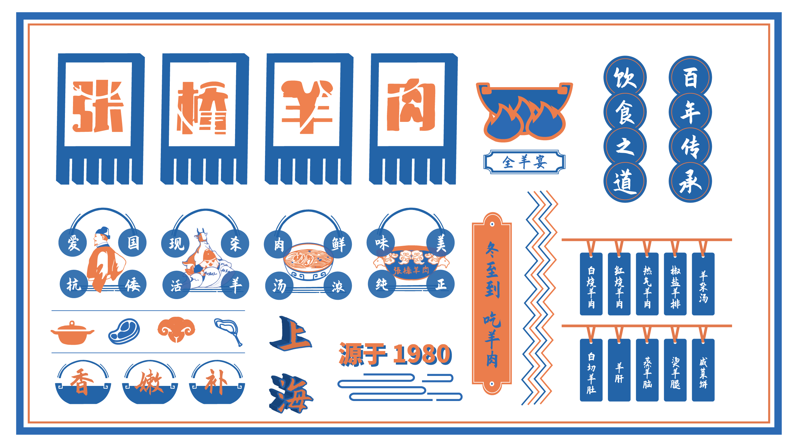
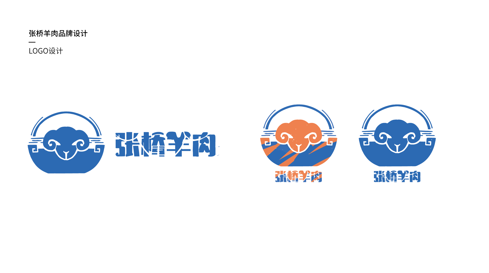
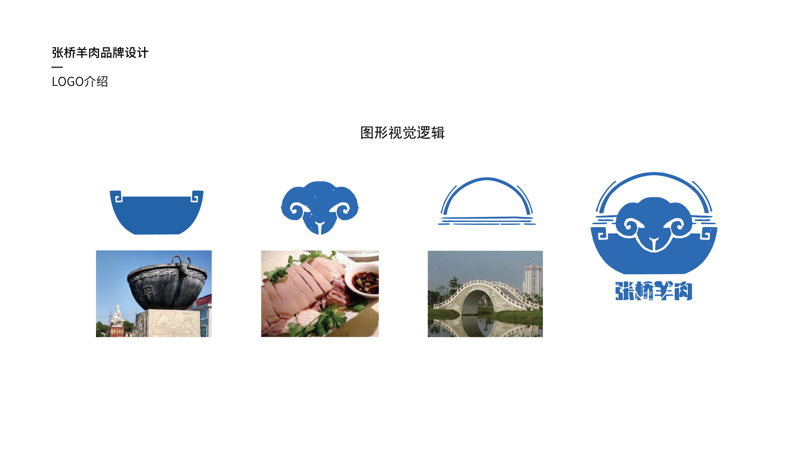
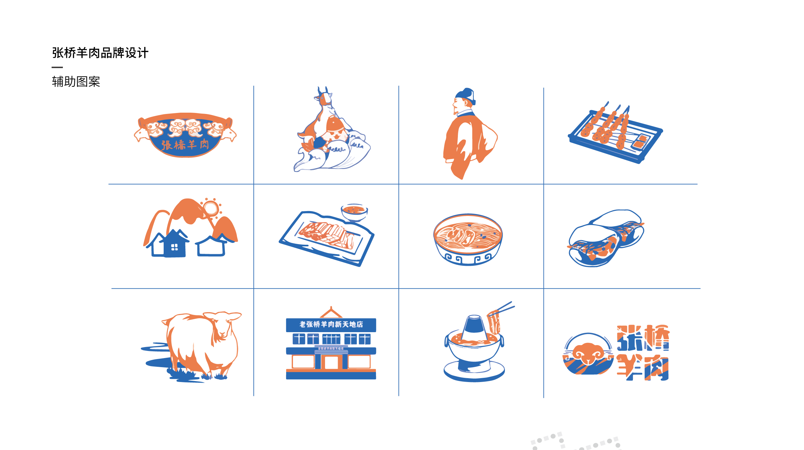
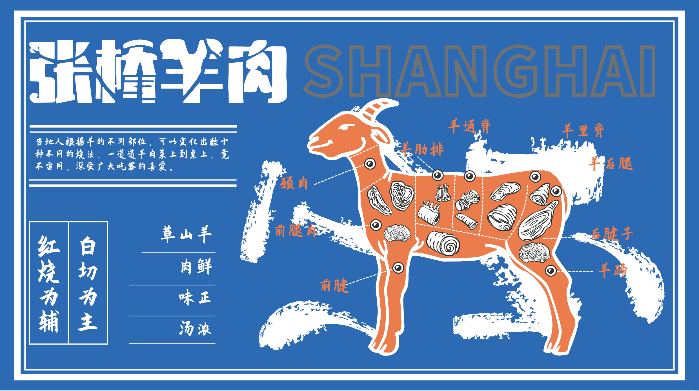

Project Name: 张桥羊肉品牌文化挖掘及新品牌打造
Project Type: Team Work
Project Role: 视觉设计
Project Date: 2020.10
Project Type: Team Work
Project Role: 视觉设计
Project Date: 2020.10
Project Introduction
张桥羊肉历史悠久。据传早在明朝，抗倭名将戚继光曾到此驻军，当地百姓就以这张桥羊肉犒劳军士，戚继光摆下军民大宴，支起大锅十口，号称“千人锅”，烹食张桥羊肉，一时间香满金山，军民欢腾。从此张桥羊肉便流传至今。本次调研和实践通过研究餐饮文化下的品牌个性化设计，开拓的设计的价值和应用，以创造有特色的品牌商品为目的，在品牌个性化设计理念的基础上更有效的传达品牌信息。同时结合了实地调查的经验，从挖掘金山张桥文化入手，提炼出具有当地特色的视觉元素，并且运用到品牌的设计中。
张桥羊肉历史悠久。据传早在明朝，抗倭名将戚继光曾到此驻军，当地百姓就以这张桥羊肉犒劳军士，戚继光摆下军民大宴，支起大锅十口，号称“千人锅”，烹食张桥羊肉，一时间香满金山，军民欢腾。从此张桥羊肉便流传至今。本次调研和实践通过研究餐饮文化下的品牌个性化设计，开拓的设计的价值和应用，以创造有特色的品牌商品为目的，在品牌个性化设计理念的基础上更有效的传达品牌信息。同时结合了实地调查的经验，从挖掘金山张桥文化入手，提炼出具有当地特色的视觉元素，并且运用到品牌的设计中。